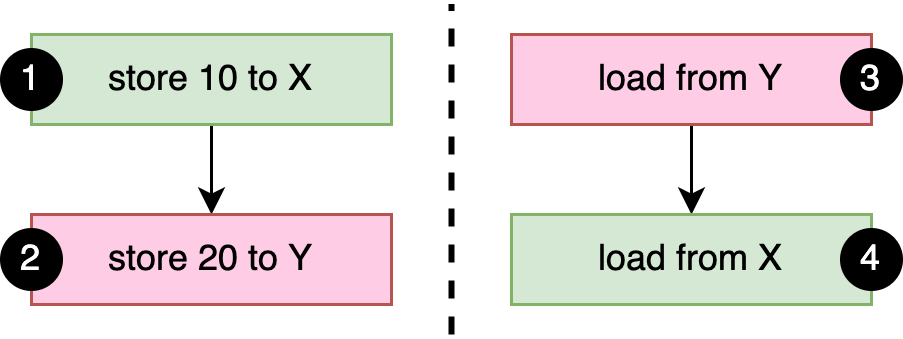
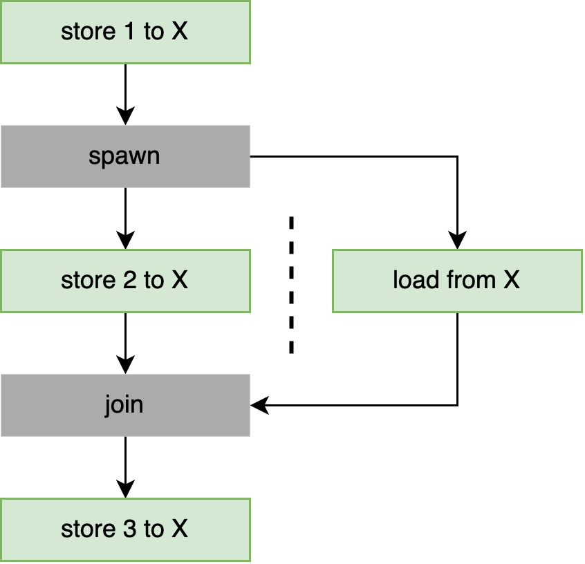
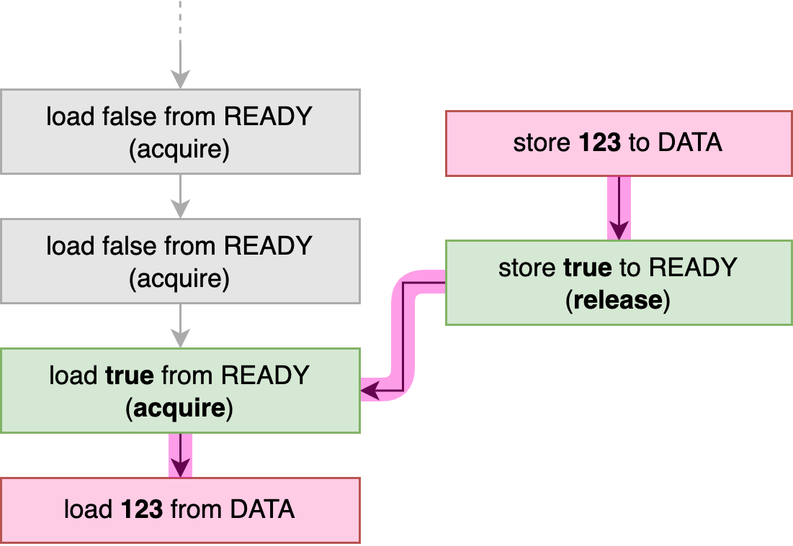
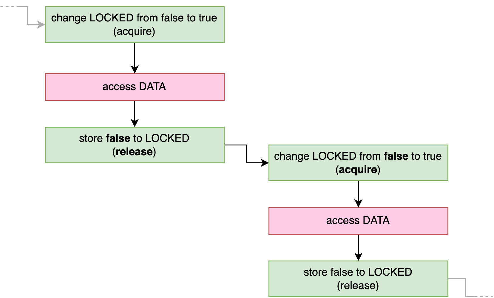
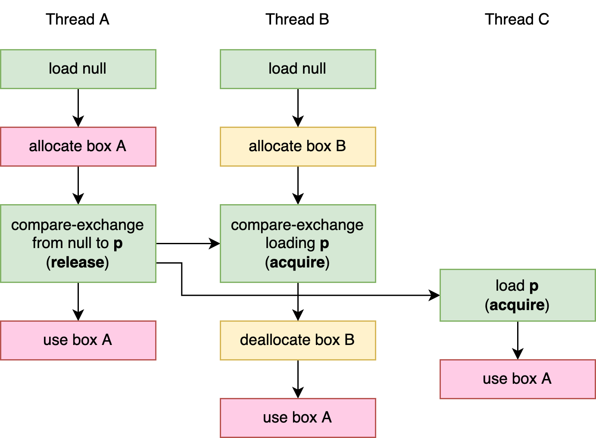

The names "release" and "acquire" are based on their most basic use case: one thread releases data by atomically storing some value to an atomic variable, and another thread acquires it by atomically loading that value. This is exactly what happens when we unlock (release) a mutex and subsequently lock (acquire) it on another thread.
Memory Ordering
Memory Ordering
In Chapter 2, we briefly touched upon the concept of memory ordering. In this chapter, we’ll dive into this topic and explore all the available memory ordering options, and, most importantly, when to use which one.
Reordering and Optimizations
Processors and compilers perform all sorts of tricks to make your programs run as fast as possible. A processor might determine that two particular consecutive instructions in your program will not affect each other, and execute them out of order if that is faster, for example. While one instruction is briefly blocked on fetching some data from main memory, several of the following instructions might be executed and finished before the first instruction finishes, as long as that wouldn’t change the behavior of your program. Similarly, a compiler might decide to reorder or rewrite parts of your program if it has reason to believe that might result in faster execution. But, again, only if that wouldn’t change the behavior of your program.
Let’s take a look at the following function as an example:
fn f(a: &mut i32, b: &mut i32) {
*a += 1;
*b += 1;
*a += 1;
}Here, the compiler will most certainly understand that the order of these operations does not matter, since nothing happens between these three addition operations that depends on the value of *a or *b. (Assuming overflow checking is disabled.) Because of that, it might reorder the second and third operations, and then merge the first two into a single addition:
fn f(a: &mut i32, b: &mut i32) {
*a += 2;
*b += 1;
}Later, while executing this function of the optimized compiled program, a processor might for a variety of reasons end up executing the second addition before the first addition, possibly because *b was available in a cache, while *a had to be fetched from the main memory.
Regardless of these optimizations, the result stays the same: *a is incremented by two and *b is incremented by one. The order in which they were incremented is entirely invisible to the rest of your program.
The logic for verifying that a specific reordering or other optimization won’t affect the behavior of your program does not take other threads into account. In our example above, that’s perfectly fine, as the unique references (&mut i32) guarantee that nothing else can possibly access the values, making other threads irrelevant. The only situation where this is a problem is when mutating data that’s shared between threads. Or, in other words, when working with atomics. This is why we have to explicitly tell the compiler and processor what they can and can’t do with our atomic operations, since their usual logic ignores interactions between threads and might allow for optimizations that do change the result of your program.
The interesting question is how we tell them. If we wanted to precisely spell out exactly what is and isn’t acceptable, concurrent programming might become exceedingly verbose and error-prone, and maybe even architecture-specific:
let x = a.fetch_add(1,
Dear compiler and processor,
Feel free to reorder this with operations on b,
but if there's another thread concurrently executing f,
please don't reorder this with operations on c!
Also, processor, don't forget to flush your store buffer!
If b is zero, though, it doesn't matter.
In that case, feel free to do whatever is fastest.
Thanks~ <3
);Instead, we can only pick from a small set of options, represented by the std::sync::atomic::Ordering enum, which every atomic operation takes as an argument. The set of available options is very limited, but has been carefully picked to fit most use cases well. The orderings are very abstract and do not directly reflect the actual compiler and processor mechanisms involved, such as instruction reordering. This makes it possible for your concurrent code to be architecture-independent and future-proof. It allows for verification without knowing the details of every single current and future processor and compiler version.
The available orderings in Rust are:
Relaxed ordering:
Ordering::RelaxedRelease and acquire ordering:
Ordering::{Release, Acquire, AcqRel}Sequentially consistent ordering:
Ordering::SeqCst
In C++, there is also something called consume ordering, which has been purposely omitted from Rust, but is nonetheless interesting to discuss as well.
The Memory Model
The different memory ordering options have a strict formal definition to make sure we know exactly what we’re allowed to assume, and for compiler writers to know exactly what guarantees they need to provide to us. To decouple this from the details of specific processor architectures, memory ordering is defined in terms of an abstract memory model.
Rust’s memory model, which is mostly copied from C++, doesn’t match any existing processor architecture, but instead is an abstract model with a strict set of rules that attempt to represent the greatest common denominator of all current and future architectures, while also giving the compiler enough freedom to make useful assumptions while analyzing and optimizing programs.
We’ve already seen a part of the memory model in action in "Borrowing and Data Races" in Chapter 1, where we talked about how data races result in undefined behavior. Rust’s memory model allows for concurrent atomic stores, but considers concurrent non-atomic stores to the same variable to be a data race, resulting in undefined behavior.
On most processor architectures, however, there is actually no difference between an atomic store and a regular non-atomic store, as we’ll see in Chapter 7. One could argue that the memory model is more restrictive than necessary, but these strict rules make it easier to reason about a program, both for the compiler and the programmer, and they leave space for future developments.
Happens-Before Relationship
The memory model defines the order in which operations happen in terms of happens-before relationships. This means that as an abstract model, it doesn’t talk about machine instructions, caches, buffers, timing, instruction reordering, compiler optimizations, and so on, but instead only defines situations where one thing is guaranteed to happen before another thing, and leaves the order of everything else undefined.
The basic happens-before rule is that everything that happens within the same thread happens in order. If a thread is executing f(); g();, then f() happens-before g().
Between threads, however, happens-before relationships only occur in a few specific cases, such as when spawning and joining a thread, unlocking and locking a mutex, and through atomic operations that use non-relaxed memory ordering. Relaxed memory ordering is the most basic (and most performant) memory ordering that, by itself, never results in any cross-thread happens-before relationships.
To explore what that means, let’s take a look at the following example where we assume a and b are concurrently executed by different threads:
static X: AtomicI32 = AtomicI32::new(0);
static Y: AtomicI32 = AtomicI32::new(0);
fn a() {
X.store(10, Relaxed); // (1)
Y.store(20, Relaxed); // (2)
}
fn b() {
let y = Y.load(Relaxed); // (3)
let x = X.load(Relaxed); // (4)
println!("{x} {y}");
}As mentioned above, the basic happens-before rule is that everything that happens within the same thread happens in order. In this case: (1) happens-before (2), and (3) happens-before (4), as shown in Figure 3-1. Since we use relaxed memory ordering, there are no other happens-before relationships in our example.

If either of a or b completes before the other starts, the output will be 0 0 or 10 20. If a and b run concurrently, it’s easy to see how the output can be 10 0. One way this can happen is if the operations run in this order: (3) (1) (2) (4).
More interestingly, the output can also be 0 20, even though there is no possible globally consistent order of the four operations that would result in this outcome. When (3) is executed, there is no happens-before relationship with (2), which means it could load either 0 or 20. When (4) is executed, there is no happens-before relationship with (1), which means it could load either 0 or 10. Given this, the output 0 20 is a valid outcome.
The important and counter-intuitive thing to understand is that operation (3) loading the value 20 does not result in a happens-before relationship with (2), even though that value is the one stored by (2). Our intuitive understanding of the concept of "before" breaks down when things don’t necessarily happen in a globally consistent order, such as when instruction reordering is involved.
A more practical and intuitive, but less formal, understanding is that from the perspective of the thread executing b, operations (1) and (2) might appear to happen in the opposite order.
Spawning and Joining
Spawning a thread creates a happens-before relationship between what happened before the spawn() call, and the new thread. Similarly, joining a thread creates a happens-before relationship between the joined thread and what happens after the join() call.
To demonstrate, the assertion in the following example cannot fail:
static X: AtomicI32 = AtomicI32::new(0);
fn main() {
X.store(1, Relaxed);
let t = thread::spawn(f);
X.store(2, Relaxed);
t.join().unwrap();
X.store(3, Relaxed);
}
fn f() {
let x = X.load(Relaxed);
assert!(x == 1 || x == 2);
}Because of the happens-before relationships formed by the join and spawn operations, we know for sure that the load from X happens after the first store, but before the last store, as visualized in Figure 3-2. However, whether it observes the value before or after the second store is unpredictable. In other words, it could load either 1 or 2, but not 0 or 3.

Relaxed Ordering
While atomic operations using relaxed memory ordering do not provide any happens-before relationship, they do guarantee a total modification order of each individual atomic variable. This means that all modifications of the same atomic variable happen in an order that is the same from the perspective of every single thread.
To demonstrate what that means, consider the following example where we assume a and b are concurrently executed by different threads:
static X: AtomicI32 = AtomicI32::new(0);
fn a() {
X.fetch_add(5, Relaxed);
X.fetch_add(10, Relaxed);
}
fn b() {
let a = X.load(Relaxed);
let b = X.load(Relaxed);
let c = X.load(Relaxed);
let d = X.load(Relaxed);
println!("{a} {b} {c} {d}");
}In this example, only one thread modifies X, which makes it easy to see that there’s only one possible order of modification of X: 0→5→15. It starts at zero, then becomes five, and is finally changed to fifteen. Threads cannot observe any values from X that are inconsistent with this total modification order. This means that "0 0 0 0", "0 0 5 15", and "0 15 15 15" are some of the possible results from the print statement in the other thread, while an output of "0 5 0 15" or "0 0 10 15" is impossible.
Even if there’s more than one possible order of modification for an atomic variable, all threads will agree on a single order.
Let’s replace a by two separate functions, a1 and a2, which we assume are each executed by a separate thread:
fn a1() {
X.fetch_add(5, Relaxed);
}
fn a2() {
X.fetch_add(10, Relaxed);
}Assuming these are the only threads modifying X, there are now two possible modification orders: either 0→5→15, or 0→10→15, depending on which fetch_add operation executes first. Whichever happens, all threads observe the same order. So, even if we have hundreds of additional threads all running our b() function, we know that if one of them prints a 10, the order must be 0→10→15 and none of them can possibly print a 5. And vice versa.
In Chapter 2, we saw several examples of use cases where this total modification order guarantee for individual variables is enough, making relaxed memory ordering sufficient. However, if we try anything more advanced beyond those examples, we’ll quickly see we need something stronger than relaxed memory ordering.
Out-of-Thin-Air Values
The lack of ordering guarantees around relaxed memory ordering can lead to some theoretical complications when operations depend on each other in a cyclic way.
To demonstrate, here’s a contrived example where two threads load a value from one atomic and store it in the other:
static X: AtomicI32 = AtomicI32::new(0);
static Y: AtomicI32 = AtomicI32::new(0);
fn main() {
let a = thread::spawn(|| {
let x = X.load(Relaxed);
Y.store(x, Relaxed);
});
let b = thread::spawn(|| {
let y = Y.load(Relaxed);
X.store(y, Relaxed);
});
a.join().unwrap();
b.join().unwrap();
assert_eq!(X.load(Relaxed), 0); // Might fail?
assert_eq!(Y.load(Relaxed), 0); // Might fail?
}It seems easy to conclude that the values of X and Y will never be anything other than zero, since the store operations only store values that were loaded from these same atomics, which are only ever zero.
If we strictly follow the theoretical memory model, however, we have to come to terms with our cyclic reasoning, and come to the scary conclusion that we might be wrong. In fact, the memory model technically allows for an outcome where both X and Y are 37 in the end, or any other value, making the assertions fail.
Due to the lack of ordering guarantees, the load operations of these two threads might both see the result of the store operation of the other thread, allowing for a cycle in the order of operations: we store 37 in Y because we loaded 37 from X, which was stored to X because we loaded 37 from Y, which is the value we stored in Y.
Fortunately, the possibility of such out-of-thin-air values is universally considered to be a bug in the theoretical model, and not something you need to take into account in practice. The theoretical problem of how to formalize relaxed memory ordering without the model allowing for such anomalies is an unsolved one. While this is an eyesore for formal verification that keeps many theoreticians up at night, the rest of us can relax in blissful ignorance knowing that this does not happen in practice.
Release and Acquire Ordering
Release and acquire memory ordering are used in a pair to form a happens-before relationship between threads. Release memory ordering applies to store operations, while Acquire memory ordering applies to load operations.
A happens-before relationship is formed when an acquire-load operation observes the result of a release-store operation. In this case, the store and everything before it happened before the load and everything after it.
When using Acquire for a fetch-and-modify or compare-and-exchange operation, it applies only to the part of the operation that loads the value. Similarly, Release applies only to the store part of an operation. AcqRel is used to represent the combination of Acquire and Release, which causes both the load to use acquire ordering and the store to use release ordering.
Let’s go over an example to see how that’s used in practice. In the following example, we send a 64-bit integer from a spawned thread to the main thread. We use an extra atomic boolean to indicate to the main thread that the integer has been stored and is ready to be read.
use std::sync::atomic::Ordering::{Acquire, Release};
static DATA: AtomicU64 = AtomicU64::new(0);
static READY: AtomicBool = AtomicBool::new(false);
fn main() {
thread::spawn(|| {
DATA.store(123, Relaxed);
READY.store(true, Release); // Everything from before this store ..
});
while !READY.load(Acquire) { // .. is visible after this loads `true`.
thread::sleep(Duration::from_millis(100));
println!("waiting...");
}
println!("{}", DATA.load(Relaxed));
}When the spawned thread is done storing the data, it uses a release-store to set the READY flag to true. When the main thread observes this through its acquire-load operation, a happens-before relationship is established between those two operations, as shown in Figure 3-3. At that point, we know for sure that everything that happened before the release-store to READY is visible to everything that happens after the acquire-load. Specifically, when the main thread loads from DATA, we know for sure it will load the value stored by the background thread. There’s only one possible outcome this program can print on its last line: 123.

If we had used relaxed memory ordering for all operations in this example, the main thread could have seen READY flip to true, while still loading a zero from DATA afterwards.
Note
In our example, the happens-before relationship from the READY flag guarantees that the store and load operations of DATA cannot happen concurrently. This means that we don’t actually need those operations to be atomic.
However, if we simply try to use a regular non-atomic type for our data variable, the compiler will refuse our program, since Rust’s type system doesn’t allow us to mutate those from one thread when another thread is also borrowing them. The type system does not magically understand the happens-before relationship we’ve created here. Some unsafe code is necessary to promise to the compiler that we’ve thought about this carefully and we’re sure we’re not breaking any rules, as follows:
static mut DATA: u64 = 0;
static READY: AtomicBool = AtomicBool::new(false);
fn main() {
thread::spawn(|| {
// Safety: Nothing else is accessing DATA,
// because we haven't set the READY flag yet.
unsafe { DATA = 123 };
READY.store(true, Release); // Everything from before this store ..
});
while !READY.load(Acquire) { // .. is visible after this loads `true`.
thread::sleep(Duration::from_millis(100));
println!("waiting...");
}
// Safety: Nothing is mutating DATA, because READY is set.
println!("{}", unsafe { DATA });
}More Formally
A happens-before relationship is formed when an acquire-load operation observes the result of a release-store operation. But what does that mean?
Imagine that two threads both release-store a seven into the same atomic variable, and a third thread loads a seven from that variable. Does the third thread now have a happens-before relationship with the first thread or the second one? That depends on "which seven" it loaded: the one from thread one or the one from thread two. (Or perhaps an unrelated seven.) This leads us to the conclusion that even though seven equals seven, there is something different about the two sevens from the two threads.
The way to think about this is in terms of the total modification order that we talked about in "Relaxed Ordering": the ordered list of all modifications that happen to an atomic variable. Even if the same value is written to the same variable more than once, each of these operations represents a separate event in the total modification order of that variable. When we load a value, the value loaded matches a specific point on this per-variable "timeline," which tells us which operation we might be synchronizing with.
For example, if the total modification order of the atomic is
Initialized at 0
Release-store 7 (from thread two)
Relaxed-store 6
Release-store 7 (from thread one)
then acquire-loading a 7 would synchronize with either the release-store from the second event, or the release-store from the last event. However, if we have previously (in terms of happens-before relationships) seen a 6, we know we’re seeing the last 7, not the first one, meaning we now have a happens-before relationship with thread one, and not with thread two.
There is one extra detail, which is that a release-stored value may be modified by any number of fetch-and-modify and compare-and-exchange operations, while still resulting in a happens-before relationship with an acquire-load that reads the final result.
For example, imagine an atomic variable with the following total modification order:
Initialized at 0
Release-store 7
Relaxed-fetch-and-add 1, changing 7 to 8
Release-fetch-and-add 1, changing 8 to 9
Release-store 7
Relaxed-swap 10, changing 7 to 10
Now, if we acquire-load a 9 from this variable, we not only establish a happens-before relationship with the fourth operation (that stored this value), but also with the second operation (which stored a 7), even though the third operation used relaxed memory ordering.
Similarly, if we acquire-load a 10 from this variable, which was written by a relaxed operation, we still establish a happens-before relationship with the fifth operation (which stored a 7). Because that was just a regular store operation (not a fetch-and-modify or compare-and-exchange operation), it breaks the chain: we don’t establish a happens-before relationship with any of the other operations.
Example: Locking
Mutexes are the most common use case for release and acquire ordering (see "Locking: Mutexes and RwLocks" in Chapter 1). When locking, they use an atomic operation to check if it was unlocked, using acquire ordering, while also (atomically) changing the state to "locked." When unlocking, they set the state back to "unlocked" using release ordering. This means that there will be a happens-before relationship between unlocking a mutex and subsequently locking it.
Here’s a demonstration of this pattern:
static mut DATA: String = String::new();
static LOCKED: AtomicBool = AtomicBool::new(false);
fn f() {
if LOCKED.compare_exchange(false, true, Acquire, Relaxed).is_ok() {
// Safety: We hold the exclusive lock, so nothing else is accessing DATA.
unsafe { DATA.push('!') };
LOCKED.store(false, Release);
}
}
fn main() {
thread::scope(|s| {
for _ in 0..100 {
s.spawn(f);
}
});
}As we’ve briefly seen in "Compare-and-Exchange Operations" in Chapter 2, compare-and-exchange operations take two memory ordering arguments: one for the case where the comparison succeeded and the store happened, and one for the case where the comparison failed and the store did not happen. In f, we attempt to change LOCKED from false to true, and only access DATA if that succeeds. So, we only care about the success memory ordering. If the compare_exchange operation fails, that must be because LOCKED was already set to true, in which case f doesn’t do anything. This matches the try_lock operation on a regular mutex.
Note
An observant reader might have already noticed that the compare-and-exchange operation could also have been a swap operation, since swapping true for true when already locked doesn’t change the correctness of the code:
// This also works.
if LOCKED.swap(true, Acquire) == false {
…
}Thanks to the acquire and release memory ordering, we know for sure that no two threads can concurrently access DATA. As visualized in Figure 3-4, any previous access to DATA happened-before the subsequent release-store of false to LOCKED, which in turn happened-before the next acquire-compare-and-exchange (or acquire-swap) operation that changed that false to true, which happened-before the next access to DATA.

In Chapter 4 we’ll turn this concept into a reusable type: a spin lock.
Example: Lazy Initialization with Indirection
In "Example: Lazy One-Time Initialization" in Chapter 2, we implemented lazy initialization of a global variable, using a compare-and-exchange operation to handle situations where multiple threads race to initialize the value concurrently. Because the value was a nonzero 64-bit integer, we were able to use an AtomicU64 to store it, using zero as the placeholder before initializing it.
To do the same for a much larger data type that does not fit in a single atomic variable, we need to look for an alternative.
For this example, let’s say we want to maintain the non-blocking behavior, so that threads never wait for another thread, but instead race and take the value from the first thread to complete initialization. This means we still need to be able to go from "uninitialized" to "fully initialized" in a single atomic operation.
As the fundamental theorem of software engineering tells us, every problem in computer science can be solved by adding another layer of indirection, and this problem is no different. Since we can’t fit the data into a single atomic variable, we can instead use an atomic variable to store a pointer to the data.
An AtomicPtr<T> is the atomic version of a *mut T: a pointer to T. We can use a null pointer as the placeholder for the initial state, and use a compare-and-exchange operation to atomically replace it with a pointer to a newly allocated, fully initialized T, which can then be read by the other threads.
Since we’re not only sharing the atomic variable containing the pointer, but also the data it points to, we can no longer use relaxed memory ordering like in Chapter 2. We need to make sure that allocating and initializing the data does not race with reading it. In other words, we need to use release and acquire ordering on the store and load operations, to make sure the compiler and processor won’t break our code by—for example—reordering the store of the pointer and the initialization of the data itself.
This leads us to the following implementation, for some arbitrary data type called Data:
use std::sync::atomic::AtomicPtr;
fn get_data() -> &'static Data {
static PTR: AtomicPtr<Data> = AtomicPtr::new(std::ptr::null_mut());
let mut p = PTR.load(Acquire);
if p.is_null() {
p = Box::into_raw(Box::new(generate_data()));
if let Err(e) = PTR.compare_exchange(
std::ptr::null_mut(), p, Release, Acquire
) {
// Safety: p comes from Box::into_raw right above,
// and wasn't shared with any other thread.
drop(unsafe { Box::from_raw(p) });
p = e;
}
}
// Safety: p is not null and points to a properly initialized value.
unsafe { &*p }
}If the pointer we acquire-load from PTR is non-null, we assume it points to the already initialized data, and construct a reference to that data.
If it’s still null, however, we generate new data and store it in a new allocation using Box::new. We then turn this Box into a raw pointer using Box::into_raw, so we can attempt to store it into PTR using a compare-and-exchange operation. If another thread wins the initialization race, compare_exchange fails as PTR is no longer null. If that happens, we turn our raw pointer back into a Box to deallocate it using drop, avoiding a memory leak, and continue with the pointer that the other thread stored in PTR.
The safety comment on the final unsafe block states our assumption that the data it points to has already been initialized. Note how this includes an assumption about the order in which things happened. To make sure our assumption holds, we use release and acquire memory ordering to make sure initializing the data has actually happened-before creating a reference to it.
We load a potentially non-null (i.e., initialized) pointer in two places: through the load operation and through the compare_exchange operation when it fails. So, as explained above, we need to use Acquire for both the load memory ordering and the compare_exchange failure memory ordering, to be able to synchronize with the operation that stores the pointer. This store happens when the compare_exchange operation succeeds, so we must use Release as its success ordering.
Figure 3-5 shows a visualization of the operations and happens-before relationships for a situation in which three threads call get_data(). In this situation, threads A and B both observe a null pointer and both attempt to initialize the atomic pointer. Thread A wins that race, causing thread B’s compare_exchange operation to fail. Thread C only observes the atomic pointer after it has been initialized by thread A. The end result is that all three threads end up using the box that was allocated by thread A.

Consume Ordering
Let’s take a closer look at the memory ordering in our last example. If we leave the strict memory model aside and think of it in more practical terms, we could say that the release ordering prevents the initialization of the data from being reordered with the store operation that shares the pointer with the other threads. This is important, since otherwise other threads might be able to see the data before it’s fully initialized.
Similarly, we could explain the acquire ordering as preventing reordering that would cause the data to be accessed before the pointer is loaded. One might reasonably wonder, however, if that makes any sense in practice. How could the data be accessed before its address is known? We might conclude that something weaker than acquire ordering might suffice. And we would be right: this weaker ordering is called consume ordering.
Consume ordering is basically a lightweight—more efficient—variant of acquire ordering, whose synchronizing effects are limited to things that depend on the loaded value.
What that means is that if you consume-load a release-stored value x from an atomic variable, then, basically, that store happened before the evaluation of dependent expressions like *x, array[x] or table.lookup(x + 1), but not necessarily before independent operations, like reading another variable that we don’t need the value of x for.
Now there’s good news and bad news.
The good news is that—on all modern processor architectures—consume ordering is achieved with the exact same instructions as relaxed ordering. In other words, consume ordering can be "free," which—at least on some platforms—is not the case for acquire ordering.
The bad news is that no compiler actually implements consume ordering.
As it turns out, not only is this concept of a "dependent" evaluation hard to define, it’s even harder to keep such dependencies intact while transforming and optimizing a program. For example, a compiler might be able to optimize x + 2 - x to just 2, effectively dropping the dependency on x. More subtle variations of this issue can happen with more realistic expressions like array[x], if the compiler is able to make any logical deductions about the possible values of x or the array’s elements. The issue gets even more complicated when taking control flow into account, like if statements or function calls.
Because of this, compilers upgrade consume ordering to acquire ordering, just to be safe. The C++20 standard even explicitly discourages the use of consume ordering, noting that an implementation other than just acquire ordering turned out to be infeasible.
It’s possible that a workable definition and implementation of consume ordering might be found in the future. Until that time arrives, however, Rust does not expose Ordering::Consume.
Sequentially Consistent Ordering
The strongest memory ordering is sequentially consistent ordering: Ordering::SeqCst. It includes all the guarantees of acquire ordering (for loads) and release ordering (for stores), and also guarantees a globally consistent order of operations.
This means that every single operation using SeqCst ordering within a program is part of a single total order that all threads agree on. This total order is consistent with the total modification order of each individual variable.
Since it is strictly stronger than acquire and release memory ordering, a sequentially consistent load or store can take the place of an acquire-load or release-store in a release-acquire pair to form a happens-before relationship. In other words, an acquire-load can not only form a happens-before relationship with a release-store, but also with a sequentially consistent store, and similarly the other way around.
Note
Only when both sides of a happens-before relationship use SeqCst ordering is it guaranteed to be consistent with the single total order of SeqCst operations.
While it might seem like the easiest memory ordering to reason about, SeqCst ordering is almost never necessary in practice. In nearly all cases, regular acquire and release ordering suffice.
Here’s an example that depends on sequentially consistent ordered operations:
use std::sync::atomic::Ordering::SeqCst;
static A: AtomicBool = AtomicBool::new(false);
static B: AtomicBool = AtomicBool::new(false);
static mut S: String = String::new();
fn main() {
let a = thread::spawn(|| {
A.store(true, SeqCst);
if !B.load(SeqCst) {
unsafe { S.push('!') };
}
});
let b = thread::spawn(|| {
B.store(true, SeqCst);
if !A.load(SeqCst) {
unsafe { S.push('!') };
}
});
a.join().unwrap();
b.join().unwrap();
}Both threads first set their own atomic boolean to true to warn the other thread that they are about to access S, and then check the other’s atomic boolean to see if they can safely access S without causing a data race.
If both store operations happen before either of the load operations, it’s possible that neither thread ends up accessing S. However, it’s impossible for both threads to access S and cause undefined behavior, since the sequentially consistent ordering guarantees only one of them can win the race. In every possible single total order, the first operation will be a store operation, which prevents the other thread from accessing S.
Virtually all real-world uses of SeqCst involve a similar pattern of a store that must be globally visible before a subsequent load on the same thread. For these situations, a potentially more efficient alternative is to instead use relaxed operations in combination with a SeqCst fence, which we’ll explore next.
Fences
In addition to operations on atomic variables, there is one more thing that we can apply a memory ordering to: atomic fences.
The std::sync::atomic::fence function represents an atomic fence and is either a release fence (Release), an acquire fence (Acquire), or both (AcqRel or SeqCst). A SeqCst fence additionally also takes part in the sequentially consistent total order.
An atomic fence allows you to separate the memory ordering from the atomic operation. This can be useful if you want to apply a memory ordering to multiple operations, or if you only want to apply it conditionally.
In essence, a release-store can be split into a release fence followed by a (relaxed) store, and an acquire-load can be split into a (relaxed) load followed by an acquire fence:
|
The store of a release-acquire relationship, can be substituted by a release fence followed by a relaxed store: |
The load of a release-acquire relationship, can be substituted by a relaxed load followed by an acquire fence: |
Using a separate fence can result in an extra processor instruction, though, which can be slightly less efficient.
More importantly, unlike a release-store or an acquire-load, a fence is not tied to any single atomic variable. This means that a single fence can be used for multiple variables at once.
Formally, a release fence can take the place of a release operation in a happens-before relationship if that release fence is followed (on the same thread) by any atomic operation that stores a value observed by the acquire operation we’re synchronizing with. Similarly, an acquire fence can take the place of any acquire operation if that acquire fence is preceded (on the same thread) by any atomic operation that loads a value stored by the release operation.
Putting this together, it means that a happens-before relationship is created between a release fence and an acquire fence if any store after the release fence is observed by any load before the acquire fence.
For example, suppose we have one thread executing a release fence followed by three atomic store operations to different variables, and another thread executing three load operations from those same variables followed by an acquire fence, as follows:
|
Thread 1: |
Thread 2: |
In this situation, if any of the load operations on thread 2 loads the value from the corresponding store operation of thread 1, the release fence on thread 1 happens-before the acquire fence on thread 2.
A fence does not have to directly precede or follow the atomic operations. Anything else can happen in between, including control flow. This can be used to make the fence conditional, similar to how compare-and-exchange operations have both a success and a failure ordering.
For example, if we load a pointer from an atomic variable using acquire memory ordering, we could use a fence to apply the acquire ordering only when the pointer is not null:
|
Using an acquire-load: |
Using a conditional acquire fence: |
This can be beneficial if the pointer is often expected to be null, to avoid acquire memory ordering when not necessary.
Let’s take a look at a more complicated use case of release and acquire fences:
use std::sync::atomic::fence;
static mut DATA: [u64; 10] = [0; 10];
const ATOMIC_FALSE: AtomicBool = AtomicBool::new(false);
static READY: [AtomicBool; 10] = [ATOMIC_FALSE; 10];
fn main() {
for i in 0..10 {
thread::spawn(move || {
let data = some_calculation(i);
unsafe { DATA[i] = data };
READY[i].store(true, Release);
});
}
thread::sleep(Duration::from_millis(500));
let ready: [bool; 10] = std::array::from_fn(|i| READY[i].load(Relaxed));
if ready.contains(&true) {
fence(Acquire);
for i in 0..10 {
if ready[i] {
println!("data{i} = {}", unsafe { DATA[i] });
}
}
}
}
Note
std::array::from_fn is an easy way to execute something a certain number of times and collect the results into an array.
In this example, 10 threads do some calculations and store their results in a (non-atomic) shared variable. Each thread sets an atomic boolean to indicate that the data is ready to be read by the main thread, using a normal release-store. The main thread waits for half a second, checks all 10 booleans to see which threads are done, and prints whichever results are ready.
Instead of using 10 acquire-load operations to read the booleans, the main thread uses relaxed operations and a single acquire fence. It executes the fence before reading the data, but only if there is data to be read.
While in this particular example it might be completely unnecessary to put any effort into such optimization, this pattern for saving the overhead of additional acquire operations can be important when building highly efficient concurrent data structures.
A SeqCst fence is both a release fence and an acquire fence (just like AcqRel), but also part of the single total order of sequentially consistent operations. However, only the fence is part of the total order, but not necessarily the atomic operations before or after it. This means that unlike a release or acquire operation, a sequentially consistent operation cannot be split into a relaxed operation and a memory fence.
Compiler Fences
In addition to a regular atomic fence, the Rust standard library also provides a compiler fence: std::sync::atomic::compiler_fence. Its signature is identical to that of the regular fence() we discussed above, but its effects are restricted to just the compiler. Unlike a regular atomic fence, it does not prevent the processor from, for example, reordering instructions. In the vast majority of use cases for fences, a compiler fence does not suffice.
A potential use case might arise when implementing a Unix signal handler, or an interrupt on embedded systems. These are mechanisms that can suddenly interrupt a thread to temporarily execute an unrelated function on the same processor core. Because it happens on the same processor core, the usual ways in which the processor might affect memory ordering don’t apply. (More on that in Chapter 7.) In this case, a compiler fence might suffice, potentially saving an instruction and hopefully increasing performance.
Another use case involves process-wide memory barriers. This technique falls outside the scope of Rust’s memory model and is only supported on some operating systems: on Linux through the membarrier syscall, and on Windows using the FlushProcessWriteBuffers function. It effectively allows a thread to forcefully inject a (sequentially consistent) atomic fence into all concurrently running threads. This allows us to replace two matching fences with a lightweight compiler fence on one side and a heavyweight process-wide barrier on the other side. If the code on the side of the lightweight fence is executed much more often, this can improve overall performance. (See the documentation of the membarrier crate on crates.io for more details and a cross-platform way to use such barriers in Rust.)
A compiler fence can also be an interesting tool for exploring the effect of the processor on memory ordering. In "An Experiment" in Chapter 7, we’ll break our code on purpose by replacing a regular fence with a compiler fence. This will let us experience the subtle but potentially disastrous effects of the processor when using the wrong memory ordering.
Common Misconceptions
There are a lot of misconceptions around memory ordering. Before we end this chapter, let’s go over the most common ones.
Myth: I need strong memory ordering to make sure changes are "immediately" visible.
A common misunderstanding is that using a weak memory ordering like Relaxed means that changes to an atomic variable might never arrive at another thread, or only after a significant delay. The name "relaxed" might make it sound like nothing happens until something forces some part of the hardware to wake up and do what it should’ve done instead of relaxing.
The truth is that the memory model doesn’t say anything about timing at all. It only defines in which order certain things happen, not how long you might have to wait for them. A hypothetical computer in which it takes years to get data from one thread to another is quite unusable, but can perfectly satisfy the memory model.
In real life, memory ordering is about things like reordering instructions, which usually happen at nanosecond scale. Stronger memory ordering does not make your data travel faster; it might even slow your program down.
Myth: Disabling optimization means I don’t need to care about memory ordering.
Both the compiler and the processor play a role in making things happen in a different order than we might expect. Disabling compiler optimization does not disable every possible transformation in the compiler, and does not disable the processor features that result in instruction reordering and similar potentially problematic behavior.
Myth: Using a processor that doesn’t reorder instructions means I don’t need to care about memory ordering.
Some simple processors, such as those in small microcontrollers, have only one core and only ever execute one instruction at a time, all in order. However, while it’s true that on such devices there’s a significantly lower chance of an incorrect memory ordering resulting in actual issues, it’s still possible for the compiler to make invalid assumptions based on incorrect memory ordering, breaking your code. Besides that, it’s also important to realize that even when a processor does not execute instructions out of order, it might still have other features that can be relevant for memory ordering.
Myth: Relaxed operations are free.
Whether this is true depends on your definition of "free." It’s true that Relaxed is the most efficient memory ordering and that it can be significantly faster than the others. It’s even true that on all modern platforms, relaxed load and store operations compile down to the same processor instructions as non-atomic reads and writes.
If an atomic variable is only used by a single thread, any difference in speed with a non-atomic variable will most likely be because of the compiler having more freedom and being more effective at optimizing non-atomic operations. (Compilers tend to avoid most types of optimizations for atomic variables.)
However, accessing the same memory from multiple threads is usually significantly slower than accessing it from a single thread. A thread that continuously writes to an atomic variable will likely experience a noticeable slowdown when other threads start repeatedly reading the variable, since the processor cores and their caches now have to start collaborating.
We’ll explore this effect in Chapter 7.
Myth: Sequentially consistent memory ordering is a great default and is always correct.
Putting aside performance concerns, sequentially consistent memory ordering is often seen as the perfect type of memory ordering to default to, because of its strong guarantees. It’s true that if any other memory ordering is correct, SeqCst is also correct. This might make it sound like SeqCst is always correct. However, it’s entirely possible that a concurrent algorithm is simply incorrect, regardless of memory ordering.
More importantly, when reading code, SeqCst basically tells the reader: "this operation depends on the total order of every single SeqCst operation in the program," which is an incredibly far-reaching claim. The same code would likely be easier to review and verify if it used weaker memory ordering instead, if possible. For example, Release effectively tells the reader: "this relates to an acquire operation on the same variable," which involves far fewer considerations when forming an understanding of the code.
It is advisable to see SeqCst as a warning sign. Seeing it in the wild often means that either something complicated is going on, or simply that the author did not take the time to analyze their memory ordering related assumptions, both of which are reasons for extra scrutiny.
Myth: Sequentially consistent memory ordering can be used for a "release-load" or an "acquire-store."
While SeqCst can stand in for Acquire or Release, it is not a way to somehow create an acquire-store or release-load. Those remain nonexistent. Release only applies to store operations, and acquire only to load operations.
For example, a Release-store does not form any release-acquire relationship with a SeqCst-store. If you need them to be part of a globally consistent order, both operations will have to use SeqCst.
Summary
There might not be a global consistent order of all atomic operations, as things can appear to happen in a different order from different threads.
However, each individual atomic variable has its own total modification order, regardless of memory ordering, which all threads agree on.
The order of operations is formally defined through happens-before relationships.
Within a single thread, there is a happens-before relationship between every single operation.
Spawning a thread happens-before everything the spawned thread does.
Everything a thread does happens-before joining that thread.
Unlocking a mutex happens-before locking that mutex again.
Acquire-loading the value from a release-store establishes a happens-before relationship. This value may be modified by any number of fetch-and-modify and compare-and-exchange operations.
A consume-load would be a lightweight version of an acquire-load, if it existed.
Sequentially consistent ordering results in a globally consistent order of operations, but is almost never necessary and can make code review more complicated.
Fences allow you to combine the memory ordering of multiple operations or apply a memory ordering conditionally.